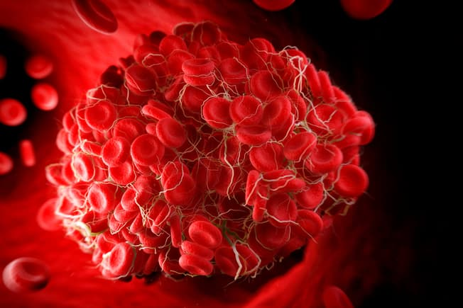

Blood and It's Importance

blood group A – has A antigens on the red blood cells with anti-B antibodies in the plasma,
blood group B – has B antigens with anti-A antibodies in the plasma,
blood group O – has no antigens, but both anti-A and anti-B antibodies in the plasma,
blood group AB – has both A and B antigens, but no antibodies.
Blood group O is the most common blood group. Almost half of the UK population (48%) has blood group O.
Receiving blood from the wrong ABO group can be life-threatening. For example, if someone with group B blood is given group A blood, their anti-A antibodies will attack the group A cells.
This is why group A blood must never be given to someone who has group B blood and vice versa.
As group O red blood cells do not have any A or B antigens, it can safely be given to any other group.
The NHS Blood and Transplant (NHSBT) website has more information about the different blood groups.
This means you can be 1 of 8 blood groups:
A RhD positive (A+),
A RhD negative (A-),
B RhD positive (B+),
B RhD negative (B-),
O RhD positive (O+),
O RhD negative (O-),
AB RhD positive (AB+),
AB RhD negative (AB-).
About 85% of the UK population is RhD positive (36% of the population has O+, the most common type).
In most cases, O RhD negative blood (O-) can safely be given to anyone. It's often used in medical emergencies when the blood type is not immediately known.
It's safe for most recipients because it does not have any A, B or RhD antigens on the surface of the cells, and is compatible with every other ABO and RhD blood group.

Blood Types in Pregnancy
If two parents have different blood types, the mother will not necessarily have the same blood type or Rh factor as the child.
If the mother has Rh-negative blood, and the child has Rh-positive, this can pose a risk during pregnancy and delivery.
A small number of red blood cells from the fetus’ circulation can cross the placenta and enter the mother’s bloodstream. Anti-RhD antibody can then develop in the mother’s plasma, in a process known as sensitization.
A problem can arise if this antibody then detects a “foreign” antigen in the fetus’ blood cells. The antibodies may start to attack the fetus’ red blood cells as a defense mechanism.
In some cases, severe jaundice can result, and possibly brain damage.
An injection of anti-RhD immune globulin G can help prevent the mother from producing this antibody and reduce the impact of a sensitizing event on the fetus.
If a woman has Rh-negative blood, a doctor may administer anti-D immunoglobulin at 28 weeks and 34 weeks as a preventive measure, according to the World Health Organization (WHO).
Blood testing during pregnancy can predict possible risks by checking whether the fetus’ blood type is compatible with the mother’s.
A blood test can determine an individual’s blood type. To test blood, a healthcare provider will take a small sample, usually from the person’s arm. In a lab, a technician mixes the individual’s blood with three different substances to see how they react. Each substance will contain A antibodies, B antibodies, or Rh factor. The antibodies will cause a different reaction in each case. If the blood is incompatible, it will clump. Observing these reactions will enable the technician to identify a person’s blood type. Before a person can receive donated blood, the technician will test the reaction by mixing a sample of the donor’s blood with that of the recipient. Specialist technicians carefully test all blood and blood products before use.
The study revealed that blood group O was the commonest (37.12%) closely followed by B at 32.26%, followed by A at 22.88% and AB was the least prevalent group at 7.74%. Out of the total donor population, 94.61% were Rh (D) positive and rest 5.39%, were Rh (D) negative
Heart Disease
There’s good news for O blood types. Research shows your risk of coronary heart disease tends to be lower. Experts aren’t sure why. Some think it might be because other types are more likely to have higher cholesterol and higher amounts of a protein that’s linked to clotting.
Stomach Cancer
A, AB, and B blood types are more at risk than type Os. Specifically, people with type A blood are more likely to get stomach cancer. Researchers think this might be because H. pylori infection is more common in people with type A blood. That’s a bacteria that’s usually found in the stomach. It can cause inflammation and ulcers.
Memory
A small study showed that people with memory problems had type AB blood more than any other.
Pancreatic Cancer
Your risk is higher if you’re type A, AB, or B. Molecules in type A and B red blood cells help certain bacteria called H. pylori grow in your gut. It can make you more likely to get pancreatic cancer.
Malaria
Type O blood may help ward off this disease. You can get malaria when an infected mosquito bites you. The parasite that causes it has a harder time attaching itself to type O blood cells.
Ulcers
Peptic ulcers -- painful open sores that crop up in the lining of your stomach or upper intestine -- seem to happen more often with blood type O.
Blood Clots
Venous thromboembolism (VTE) is when your blood clots in a deep vein, like the ones in your legs. These clots sometimes move to your lungs. Research shows that people with type A, B, or AB blood are at a higher risk of VTE.
Diabetes
Type 2 diabetes seems to happen more often in people with blood types A and B. Experts aren't sure why. More research is needed.
Strokes
Your risk for a stroke goes up if you have blood type AB. Doctors think that’s because it’s more likely to clot than other types.
Hand hygiene, Use of personal protective equipment (e.g., gloves, masks, eyewear), Respiratory hygiene / cough etiquette, Sharps safety (engineering and work practice controls), Safe injection practices (i.e., aseptic technique for parenteral medications), Sterile instruments and devices, Clean and disinfected environmental surfaces.